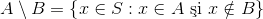
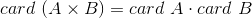
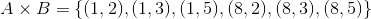
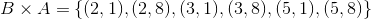
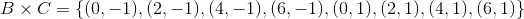

Produsul cartezian a două mulțimi nevide
Înainte de a vedea cum putem defini produsul cartezian, care reprezintă una dintre operațiile cu mulțimi, să ne amintim ce este o mulțime și care sunt operațiile pe care le putem efectua cu aceste mulțimi.
Definiția EOD 1: Mulțimea și elementele unei mulțimi
Mulțimea este un ansamblu de obiecte (cifre, litere, persoane, etc.), care, în termeni matematici, se numesc elemente.
Definiția EOD 2: Submulțime a unei mulțimi
Numim submulțime (sau parte) a unei mulțimi  , orice mulțime
, orice mulțime  , care este formată doar din elemente ale mulțimii .
, care este formată doar din elemente ale mulțimii .
Această noțiune se notează astfel:
și o citim așa:
„ este inclusă în ”.
În caz contrar, notăm , citind „ nu este inclusă în ”.
Exemple:
Câteva exemple de mulțimi sunt:
- ;
- ;
- .
Operații cu mulțimi
Fie  ,
,  și
și  trei mulțimi. Mulțimile și sunt submulțimi ale celei de-a treia mulțimi, notată cu .
trei mulțimi. Mulțimile și sunt submulțimi ale celei de-a treia mulțimi, notată cu .
Printre cele mai uzuale operații cu mulțimi întâlnim următoarele:
- Reuniunea, definită astfel: ;
- Intersecția, care se definește astfel: ;
- Diferența, dată astfel: ;
Pentru a defini produsul cartezian, considerăm două mulțimi nevide , respectiv .
Definiția EOD 3: Produsul cartezian a două mulțimi date
Produsul cartezian a mulțimilor și , în această ordine, notat prin , este definit astfel
,
reprezintând mulțimea formată din perechi de elemente, în care primul element aparține primei mulțimi, , iar al doilea element face parte din a doua mulțime, adică din .
Observație:
Produs cartezian a celor două mulțimi neviede și este reprezentat și prin mulțimea:
.
Cardinalul unei mulțimi
Un alt element important este cardinalul mulțimii produsului cartezian.
Definiția EOD 4: Cardinalul mulțimii produsului cartezian
Cardinalul mulțimi produsului cartezian înseamnă numărul perechilor din mulțime.
Acesta este egal cu produsul cardinalelor fiecarei mulțimi în parte, adică:
.
Pentru a te ajuta să înțelegi mai bine noțiunile teoretice introduse în acest prim capitol al ghidului nostru, te sfătuim să urmărești cu atenție exemplele și exercițiile din secțiunea următoare, care au fost pregătite cu mare atenție de către profesorii noștri de matematică, special pentru tine.
Exemple și aplicații
Pentru a evidenția fiecare dintre operațiile amintite în secțiunea anterioară, vom rezolva următorul exercițiu:
Fie mulțimile și . Să se determine mulțimile , , .
Rezolvare:
Ținând cont de definirea operațiilor cu mulțimi, avem:
- Intersecția acestor două mulțimi este dată de mulțimea:
.
- Reuniunea acestor două mulțimi reprezintă mulțimea:
.
Diferența acestor două mulțimi este reprezentată de mulțimea:
.
În cele ce urmează, ți se vor prezenta câteva exemple de a calcula produsului cartezian a două mulțimi date:
Exemplul 1:
Fie mulțimile , respectiv . Să se calculeze produsele cartiziene , respectiv ale celor două mulțimi date.
Rezolvare:
Conform definiției, mulțimea produsului cartezian este formată din perechi de elemente.
În primul caz , primul element aparține mulțimii , iar ce de-al doilea mulțimii .
Astfel, avem că că , iar .
Atunci, perechile care se formează sunt:
.
Deci
.
În cel de-al doilea caz , primul element este din mulțimea , iar al doilea din mulțimea .
Astfel, avem că , iar  .
.
Atunci, perechile care se formează sunt:
.
Deci
.
Observație:
Din exemplul anterior observăm că produsul cartezian nu este comutativ, adică .
Pentru a observa mai clar acest lucru, vom mai lua un exemplu, pe care îl vom rezolva print-o altă metodă.
Exemplul 2:
Fie mulțimule , respectiv . Să se calculeze produsele carteziene , respectiv ale acestor două mulțimi.
Rezolvare:
Primul produs cartezian, , îl calculăm astfel:

Așadar, avem că:
.
Al doilea produs cartezian, , se calculează în felul următor:

Astfel, am obținut mulțimea:
.
Observăm că .
În cele ce urmează ți se va prezenta un exemplu pentru cardinalul mulțimii produsului cartezian:
Exemplul 3:
Fie mulțimile  , respectiv
, respectiv  . Să se calculeze
. Să se calculeze  .
.
Rezolvare:
Observăm că mulțimea are două elemente, deci și mulțimea are trei elemente, deci .
Să calculăm produsele carteziene ale acestor mulțimi:
,
respectiv
.
Observăm că , dar fiecare mulțime are șase elemente, deci .
Deasemenea dacă înlocuim în relația , obținem egalitate, adică  sau .
sau .
Alte aplicații
Exercițiul 1
Fie mulțimile , respectiv . Să se arate că .
Soluție:
În primul rând, calculăm produsele carteziene:
,
respectiv
.
Putem observa ușor că cele două mulțimi sunt diferite.
Așadar, avem că .
Exercițiul 2
Fie mulțimea . Să se determine mulțimile și .
Soluție:
Din definirea produsului cartezian știm că în perechile care formează produsul cartezian, primul element face parte din prima mulțime, astfel că în prima mulțime, , avem elementele  și
și  .
.
Deci .
Al doilea element din produsul cartezian, face parte din mulțimea , adică .
Exercițiul 3
Fie mulțimile  și . Să se calculeze .
și . Să se calculeze .
Soluție:
Observăm că mulțimea are de elemente, iar mulțimea are  elemente.
elemente.
Atunci:
.
Exercițiul 4
Fie mulțimile , , respectiv . Să se calculeze: , , și .
Soluție:
Avem:

.